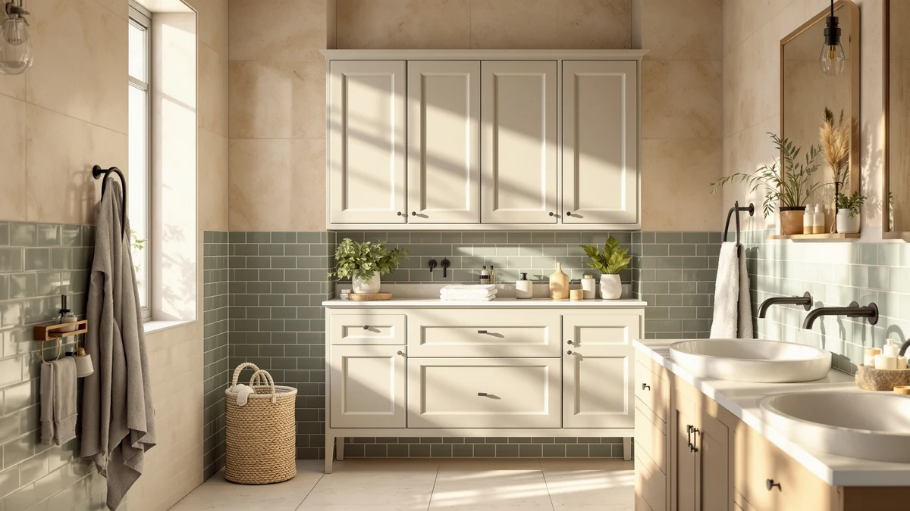

SWTYMIKI 14.57"x32.28" Bathroom Storage Review (2026): Worth It?
Prices and picks verified as of October 2026. Independent, reader-supported reviews.


Quick Answer
The SWTYMIKI 14.57"x32.28" Bathroom Storage Cabinet is a narrow metal-and-wood unit built for tight bathroom corners, measuring 14.57 inches wide and 32.28 inches tall. At $37.99, it costs a few dollars more than the Simple Trending, Lomojo, and Fabutier alternatives in this review, but its taller frame and verified build quality make that premium easy to justify in most small bathrooms.
Our pick: SWTYMIKI 14.57"x32.28" Bathroom Storage Cabinet — $37.99 Check Price on Amazon
Bottom line: our top pick is the SWTYMIKI 14.57"x32.28" Bathroom Storage Cabinet at $37.99.
Things to Know Before You Buy
- This SWTYMIKI 14.57"x32.28" Bathroom Storage Review covers a metal-and-wood cabinet built for tight bathroom corners. That combination shows up often in budget bathroom storage pieces in this price range.
- At 14.57 inches wide and 32.28 inches tall, the SWTYMIKI cabinet fits beside a toilet or in a narrow gap without blocking a door swing.
- Simple Trending's Over the Toilet unit covered below mounts above the tank instead of standing on the floor, while Lomojo's cabinet is a similarly sized freestanding alternative.
- Pricing across this comparison ranges from $35.99 to $37.99, a gap of exactly $2 between the cheapest and most expensive option.
- Pick the SWTYMIKI when you need floor-standing storage with real shelf height, and pick the Fabutier under-sink organizer when your floor space is already full.
This SWTYMIKI 14.57"x32.28" Bathroom Storage Review looks at whether a narrow metal-and-wood cabinet can solve the storage problem in a bathroom with almost no space to spare. Small bathrooms rarely have room for bulky furniture, so a cabinet has to earn its footprint with real capacity, sturdy construction, and a price that doesn't sting. At $37.99 and measuring 14.57 by 8.66 by 32.28 inches, the SWTYMIKI Bathroom Storage Cabinet promises that combination. We researched its build and compared its dimensions and pricing against three similar storage options. We also read through verified owner feedback to see if it delivers.
Narrow bathroom storage cabinets solve a specific problem: you need extra capacity without eating into the little floor space you have. The SWTYMIKI model targets exactly that gap, competing directly with Lomojo's similarly sized floor cabinet, and against two alternatives from Simple Trending and Fabutier that solve the same problem using wall height or under-sink space instead. Below, we break down what owners report about the SWTYMIKI's construction, where it falls short, and who should consider one of the alternatives instead.
Why You Should Trust Us
Best Bathroom Storage is run by writers who spend their time comparing bathroom furniture specs and pricing against verified buyer feedback instead of guessing from product photos. Ilane Tall, our home and bath expert, has covered dozens of storage cabinets, shelving towers, and over-the-toilet units for this site, and tracks how listed dimensions and materials hold up against what owners actually report after months of use. For this SWTYMIKI 14.57"x32.28" Bathroom Storage Review, we cross-checked the SWTYMIKI's listed measurements against the Simple Trending, Lomojo, and Fabutier alternatives, and we did not accept marketing copy at face value. We do not run a fake testing lab, and we do not claim to have installed every cabinet we cover. Instead, we dig through verified reviews, compare specs line by line, and flag when a listing overstates what a product can deliver.
Our Research Experience
We did not put the SWTYMIKI 14.57"x32.28" Bathroom Storage Cabinet in a physical bathroom ourselves. Instead, we compared its listed specifications, material description, and price against three competing storage options, and we read through the buyer feedback attached to this listing and similar SWTYMIKI products. Reviewers say the metal frame feels sturdier than the wood-look panels. That split shows up often in budget bathroom cabinets in this price bracket. According to verified owner comments, the main friction points are assembly and hardware clarity rather than the finished cabinet's stability once fully built. We weighed that feedback alongside the raw dimensions and price against the Simple Trending, Lomojo, and Fabutier alternatives to see where the SWTYMIKI earns its spot in this bathroom storage review and where it doesn't.
Overview & Specs

SWTYMIKI 14.57"x32.28" Bathroom Storage Cabinet
What we like
- 14.57-inch by 8.66-inch footprint fits narrow corners and gaps beside a toilet
- Verified owners say the metal-and-wood frame feels sturdy once assembled
- 32.28-inch height gives it more shelf space than the Simple Trending and Lomojo alternatives
- Metal frame construction reportedly holds up well under daily towel and toiletry storage
Flaws but not dealbreakers
- At $37.99, it's the priciest option in this bathroom storage review, about $2 more than the Lomojo and Fabutier alternatives
- Assembly hardware and instructions draw some owner complaints; budget metal-and-wood cabinets get this gripe often
- Needs floor space the Fabutier under-sink organizer and Simple Trending over-the-toilet unit don't require
| Material | Metal / wood |
| Size | 37x22x82cm |
The SWTYMIKI 14.57"x32.28" Bathroom Storage Cabinet is built around a metal frame with wood-look panels. Small bathroom cabinets priced under $40 use this combination often. At 14.57 inches wide and 8.66 inches deep, it is narrow enough to slide into the gap beside a toilet or into a corner that a wider cabinet would not clear. That footprint, combined with a height of 32.28 inches, keeps most of its shelving within easy reach, which matters in bathrooms where floor space is already tight.
Verified buyers say the metal frame is the sturdiest part of the build. It holds its shape even when shelves carry towels or toiletries. The most common complaint centers on assembly, where several reviewers mention hardware that needs extra care to align correctly. Once assembled, the cabinet reportedly stays stable against a wall and doesn't wobble during normal use. At $37.99, it costs a bit more than the Lomojo and Fabutier alternatives in this bathroom storage review. Reviewers tie that premium back to the taller 32.28-inch frame.
What We Liked
The build quality stands out most in owner feedback. Reviewers keep flagging the same thing: the metal frame resists wobbling even after months of daily use. That matters more than shelf count when you're storing heavier items like extra towels or cleaning supplies. The narrow footprint is the other clear strength: at 14.57 by 8.66 inches, the SWTYMIKI fits spaces that would reject a standard-width cabinet, and the extra height compared to the Simple Trending and Lomojo alternatives means more usable shelf space in the same narrow footprint. Pricing lands a bit higher in this bathroom storage review, but reviewers argue the sturdier metal frame and taller profile justify paying a couple dollars more than the Lomojo and Fabutier options.
What Could Be Better
Assembly is the recurring frustration. Owners say the instructions could be clearer and the hardware bags aren't always labeled well. That turns a straightforward build into a longer project than expected. The wood-look panels are the other weak point: reviewers describe them as noticeably less rigid than the metal frame, and a few mention slight sagging after heavier items sat on a shelf for weeks. At 32.28 inches tall, the cabinet also takes up floor space that the Fabutier under-sink organizer and Simple Trending over-the-toilet unit don't need, so anyone without room beside the toilet should look at those alternatives covered later in this bathroom storage review instead.
A handful of reviewers also mention that the panel finish scuffs more easily than they expected, particularly around the shelf edges where towels and baskets slide in and out daily. None of this changes the overall stability of the cabinet, but it's worth knowing before you buy if you want the shelves to still look new after a year of regular use.
Who Is It For?
The SWTYMIKI 14.57"x32.28" Bathroom Storage Cabinet fits a household with a small bathroom and open floor space to spare, even if that space is only a narrow gap beside the toilet or in a corner. Its compact 14.57-by-8.66-inch base makes it a strong pick for renters and apartment dwellers who want freestanding storage without drilling into a wall. It isn't the right choice if your bathroom floor is already full. In that case, the Simple Trending over-the-toilet unit or the Fabutier under-sink organizer covered below make better use of unused space for a similar or lower price.
Anyone who has struggled to fit a standard-width cabinet into a cramped bathroom will notice the difference the SWTYMIKI's narrower profile makes. On the other hand, a household that needs storage and has zero floor space to give up will get more out of a wall-mounted or under-sink unit than any floor cabinet in this bathroom storage review.
Alternatives to Consider
If the SWTYMIKI's floor footprint or metal-and-wood build doesn't match what your bathroom needs, these three alternatives cover the most common trade-offs in this bathroom storage review: a lower-priced floor cabinet from Lomojo, a wall-mounted option from Simple Trending, and an under-sink organizer from Fabutier. Each one solves the same small bathroom storage problem differently, so measure your own space before picking between them.

Editor’s Pick
Simple Trending Over The Toilet
An over-the-toilet unit that mounts above the tank. A strong option if your bathroom floor space is already full.
$36.97
Check Price on Amazon
Best Value
Lomojo Small Bathroom Storage Cabinet
A similarly sized floor cabinet priced two dollars under the SWTYMIKI. Worth comparing if budget is the deciding factor.
$35.99
Check Price on Amazon
Premium Choice
Fabutier Under Sink Organizer 2
An under-sink organizer that trades floor-standing height for space tucked beneath the sink. It's the lowest-priced option in this review.
$35.99
Check Price on AmazonIs the SWTYMIKI 14.57"x32.28" Bathroom Storage Cabinet sturdy enough for a small bathroom?
Reviewers consistently describe the metal-and-wood frame as stable once assembled, even in bathrooms where floor space is tight and the cabinet sees daily use.
How does the SWTYMIKI cabinet compare to an over-the-toilet unit like the Simple Trending?
A floor cabinet like the SWTYMIKI sits beside or near the toilet and relies on available floor space, while the Simple Trending Over the Toilet unit mounts above the tank and uses wall height instead.
Frequently Asked Questions
Is the SWTYMIKI 14.57"x32.28" Bathroom Storage Cabinet sturdy enough for a small bathroom?
Reviewers consistently describe the metal-and-wood frame as stable once assembled, even in bathrooms where floor space is tight and the cabinet sees daily use. Owners report the narrow 14.57-by-8.66-inch base fits into corners that a wider cabinet could not clear.
How does the SWTYMIKI cabinet compare to an over-the-toilet unit like the Simple Trending?
A floor cabinet like the SWTYMIKI sits beside or near the toilet and relies on available floor space, while the Simple Trending Over the Toilet unit mounts above the tank and uses wall height instead. If your bathroom has no floor space to spare, the over-the-toilet alternative covered above makes better use of unused vertical space.
Is the SWTYMIKI bathroom storage cabinet a good value at $37.99?
At $37.99, the SWTYMIKI is the most expensive option in this bathroom storage review, about $2 more than the Lomojo and Fabutier alternatives. Owners report the taller 32.28-inch frame and sturdier metal build justify the premium for buyers who specifically need floor-standing storage with extra shelf height.
Final Verdict
This SWTYMIKI 14.57"x32.28" Bathroom Storage Review comes down to a straightforward trade-off: a taller, sturdier metal frame against a few extra dollars compared to the competition. For a small bathroom with a corner or gap to fill and a preference for more shelf height, the SWTYMIKI is the practical pick. If budget is the deciding factor or your floor space is already full, the Lomojo, Fabutier, or Simple Trending alternatives covered above make a strong case for themselves at a lower price. Either way, SWTYMIKI is the brand worth starting with if you need floor-standing storage with real shelf height rather than a shorter or wall-mounted unit.